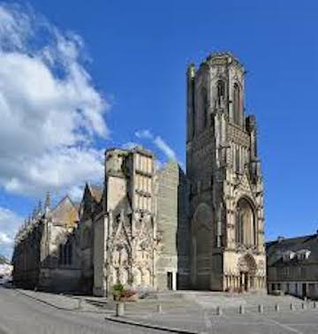

I spent 7 months in Saint-Lô, a small town in Normandy, after college. I studied French in school, so I was super eager to actually go to a town in France and hone my skills. I have to say, I got pretty good! Since I was working in a middle school as an English teaching assitant, I was able to also befriend a lot of native French people who welcomed me with open arms and made my stay in France something I remember with nostalgia! For example, my French friends took me all over Normandy and Brittany. In Normandy, I visited a bunch of towns, like Caen and Chersbourg, but the most memorable site for me was Saint Mont Michel, which is like a disney castle on an island.
In Brittany, I got to see a megalithic site called Carnac and visied Granville. I was blown away by Granville, as it is a gorgeous coastal town with an adorable lighthouse. I wouldn't mind living there at all!
Saint-Lô itself was a place I easily grew to love. It was rich in history (as was the entire region of Normandy). For example, its church, the Eglise Notre-Dame, was devastated by bombs during WWII and still has scars. People in Normandy still spoke about WWII and it was something I found myself talking about more often than expected.


While in France I of course visited Paris a number of times! I took in all the requisite sites, but the Eiffel tower and Louvre remain etched in memory. The Eiffel Tower at night was especially magical, as it not only looked amazing all lit up but also "sparkled" on the hour. I remember the Louvre mostly as a massive place that requires a few days to truly cover. I spent the last days of my stay in Paris and I still get misty eyed about it sometimes!